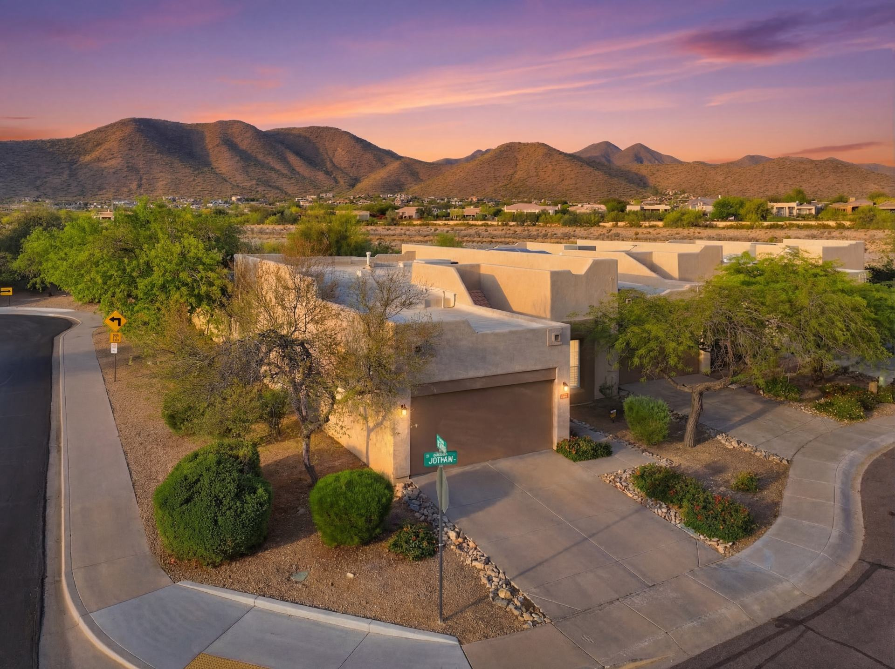

“We don’t measure success through awards. We measure it through the satisfaction of our clients.”The Glasshouse Collective
The entire team is wonderful and Carolyn is beyond special - she truly cares about what she is doing, her integrity is second to none, and she goes above and beyond as an agent in terms of assistance with a transaction. She probably showed us 50 houses, wrote contracts on 3, and never once did she "slow down" in her representation or suggest that we settle. I cannot recommend her highly enough.
Rhonda has been our real estate agent for the past 5 years. She is always available while going through all the stresses of buying and selling. No question that her enthusiasm and professionalism is amazing. She has become a great resource for all our real estate questions. We have enjoyed working with Rhonda and would not hesitate to recommend her! We trust her with always knowing the right direction to point us in. She is someone who has also become a wonderful friend. We love you!
Carolyn was fantastic! Very knowledgeable in all areas. She helped us find and get into our new house in minimum time with zero hassles. She was always available and had great communication with us through the whole process. Great realtor!
We highly recommend Carolyn Glass! Carolyn sold my home and also helped us buy a new home. She is extremely knowledgeable about the market and provided excellent information on the area and pricing. She educated us on what we needed to do to sell our home including recommendations on staging and repairs to make for it to be marketable. It worked and our home sold very quickly! When buying our new home, Carolyn was helpful in pointing out items to inspect or review, unlike anyone I have worked with before. She is excellent at negotiating and extremely professional. She always has her client's best interest in mind. Carolyn is detail-oriented and ensured all documents were in order to make sure everything was ready for our closing. We would definitely work with Carolyn again for our next real estate transaction!
As a long time renter, purchasing a house had always been a dream of mine. The process can be exciting, yet confusing and overwhelming to a first time home buyer. They understood this from the start and initially helped define my desires in a potential residence. They were patient, understanding and extremely organized as we viewed several selected properties that met my criteria. Their opinions were truthful and insightful, demonstrating a genuine desire to find me a house I would truly be happy with. I never felt pressured or got the impression they were just interested in making a quick sale. They simplified the process and answered all of my questions, allowing me to enjoy the excitement of the search. I would highly recommend this professional real estate team to any prospective home buyer and look forward to taking advantage of their knowledgeable services again on my next home purchase.
I recently purchased my dream home in Arizona with the help of Lori Wilson and Kim Jones. I was an out of state buyer so I needed quite a bit of guidance. Lori was quite patient with me and only directed me to the homes that she knew that I would like. The home that I purchased is perfect for me, and I still cannot believe that my dream has actually become a reality. I look forward to many years in my new home, and if I choose to relocate I will give Lori a call to find me my next home. Thank you so much Lori and Kim for everything you did to assist me with my Arizona property.
Carolyn, Rhonda and Kimberly are an amazing team who helped us buy our first home here. Buying a house is a journey full of surprises, but with a wonderful team to guide you, every challenge turns into happiness and joy. Thank you guys so much.
Carolyn & her team are beyond professional and easy to work with. They stay on top of all the details and know how to put the client first. Knowing we had an expert on our side while selling our house and buying our dream home, made everything less stressful. She truly “had our back”.
Working with Rhonda was such a pleasure. She showed me a number of different neighborhoods and quickly figured out what I was looking for. Her market knowledge was particularly helpful when it came time to make an offer. She was more focused on me getting the right property at a fair price than she was on making a sale. She had my best interests in mind. Rhonda was also there after the property closed to help me find pool people, landscapers, pest control, house cleaners and handymen. It was a 5-star experience!
Glasshouse Collective was easy to work with and effective at getting top dollar for our home in a declining market. Their creative marketing and strong negotiation skills helped to sell our home in 38 days. We felt well informed at all times and would recommend their level of service to any prospective client.
My husband and I met Carolyn and Lori about 14 months before we listed our home. They sat down with us and reviewed our unique situation. We instantly connected with them, and the hour-plus they spent was as if we were talking to friends who were helping us sort through the decision-making process. We decided that was not the right time to sell, we were not ready. Fast forward to the next year, at the end of the real estate craze, we listed our home. We did not realize it was the end of the craze until our house was on the market longer than we expected, but Carolyn provided a lot of data to support the new trend which helped our confidence. Never once did Carolyn shift her focus, always consulting, researching, and brainstorming different and new approaches and ideas. Carolyn helped us through the selling process that I would not have imagined being able to go through with just your average real estate agent, she brought such grace and calm, and I am so grateful we had her by our side the entire time. I have to say, she went above and beyond time and time again. Our home sold, and we never felt pressured to drop the price for a quick sale. Carolyn always listened to our needs and wishes. Her approach is the best I have ever encountered during the several times we have sold and bought real estate. She comes from a place of honesty, compassion, and extreme integrity. Her team of agents are all top notch. Our main contact was Carolyn but when she was unavailable (which was rare, even when she was on vacation) her team seamlessly took the reins. They are all kind, warm and extremely professional. I would highly recommend Carolyn and her team; they are simply the best I have ever known. We now have a friend for life!
Rhonda Claxton and her team are amazing. Many hours were spent finding us the perfect house and Rhonda was so patient and knowledgeable. Rhonda has a deep understanding of the unique market here in Arizona. Rhonda advocated for us while keeping the process smooth. We are so grateful to have Rhonda in our lives!
After unsuccessfully attempting to sell our house through another agent, we utilized Carolyn, and what we found was a complete opposite. We found an agent on our side, guiding us through a stressful time in our lives. It’s rare finding someone who is excited about their job & takes pride in their work, both of which describe Carolyn perfectly. Rather than being overwhelmed with our horse property, she displayed enthusiasm at its challenges and offered specific suggestions that led to a successful close. In my business, I deal with individuals involved in real estate daily, and I have yet to find someone with comparable communication and organizational skills. If you have doubts, Carolyn has my number, I will happily talk to you.
Carolyn and her team made our home buying process a breeze! Buying a home can seem daunting, but Carolyn and her team promptly answered calls/emails to keep us informed every step of the way. Their personalized approach and commitment to our best interests ensured we found the perfect home. Not only was the professionalism top notch, but they also showed genuine excitement for us all the way to the end making it such a memorable experience for us. We cannot wait to start our family in our new home, and we have this team to thank!
Carolyn Glass and her team have gone above and beyond with professionalism, knowledge and compassion in each real estate transaction they have done for me. Being an out of state buyer she has researched extensively our areas of interest and all our fine details of what we were looking for in homes. She was patient with me and handled all the details including meeting contractors and attending to every issue that arose for us. She is such a friendly, pleasant person who genuinely cares for each of her clients. Her extensive knowledge of the field is apparent. We have done traditional and non traditional deals and she has guided us through each with ease. Her extended team is very detail oriented and treated us with respect. I can’t praise enough about our experiences with Carolyn Glass. She truly is not your average realtor and you will love her.
Rhonda was outstanding and super responsive to all our demands. She perfectly understood what product we were after and she delivered. I will recommend Rhonda to any of my family, friends or anyone who's looking for a true professional real estate agent.
This team made our first home buying experience completely seamless. I wholeheartedly recommend if you're looking for professionals to look out for you while buying a home. They helped us with the whole process - from narrowing down on what we were looking out in the initial step to the final stages of escrow.
Rhonda’s expertise and professionalism in selling our Scottsdale patio home were seamless from listing to closing. She was always available, had excellent communication, and contracted on our house within 48 hours. We were updated during the entire process, keeping us informed of negotiations and important timeline considerations; closing happened on time with no issues. Would highly recommend.
I love the confidence I feel when referring friends to Carolyn for their real estate needs. I entrust all my referrals into her care because I fully trust her as a conscientious, kind, and skillful Realtor. She has so much industry knowledge and expertise, negotiation skills, and consistently goes above and beyond for others. Highly recommend!
We have worked with Carolyn to buy and sell multiple properties in Scottsdale, Chandler, and the West valley across many price points. Carolyn and her team are incredibly knowledgeable, patient, kind, and well connected. Their experience shows in their negotiations, property presentation, and understanding of the micro-markets throughout the valley. HIGHLY recommend the Glasshouse Collective to anyone looking for a realtor.
We had a great experience buying our home from out of state in the highly competitive sellers market of 2022. Carolyn’s team conducted video showings with us, and their offer strategies helped us come out on top against 12 other offers on our home. It was a great experience during a challenging time for buyers, and all done while we were living across the country.
Carolyn has represented us in the purchase and sale of several homes over the last 11yrs. She is an expert realtor with the knowledge, network, and resources to negotiate, problem solve, and guide you through the home buying/selling process. Carolyn and her team are kind and thoughtful while equally fierce and driven to help their clients reach their real estate goals. The home buying/selling process isn’t always an easy one, but this team always makes it feel like it is.
Carolyn and her team are amazing! True professionals who know the real estate market and will always help you make the best decisions whether you are buying or selling. They are professionals at evaluating your property, marketing it to potential buyers and beautiful staging which all leads to full price offers. We had a complicated transaction and Carolyn's calming personality and expertise put everyone at ease. I couldn't recommend Glasshouse Collective enough for all of your real estate needs!
Carolyn sold our old house and helped us purchase a new. She is professional, knowledgeable, and compassionate for what she does. From beginning to end she provided stellar service. I would highly recommend her to anyone needing residential real estate services.
Carolyn is the first realtor we have worked with who made us feel at all times like we were her top priority. From helping us to stage the house (even helped with moving furniture and bringing staging items from her own supplies!) to always steering us in the right direction regarding potential buyers and negotiations, no realtor has worked for us as hard as she did! I really didn't understand how difficult it was to be a realtor until we watched Carolyn jump through hoops to get the right deal for us. It is easy to see that her integrity means everything to her. Several times she pointed out how something might become a conflict of interest, and she wanted to make us aware of it up front. In this day and age, with so many complications regarding lending and potential litigations, having a truly experienced realtor is a must. Carolyn offers all of the experience & professionalism you could ask for, and as an added bonus she keeps a sense of humor throughout it all. And in my mind, she has exactly the right amount of support. We were able to deal with Carolyn almost exclusively. But when she did have conflicts, her partner was also great to work with. We never felt that we were "pushed off" on an under-experienced assistant. And finally, she's not only knowledgeable when house hunting, she's also very fun to house hunt with!
Carolyn is the most professional/personable sales agent I have ever met. Her attention to details is unmatched. Through the whole process there was never a question that she worked for me and her smart, personable and teammate approach to the sale of my house made the process painless! I highly recommend Carolyn as a selling agent, she is very good!
Carolyn was great through the entire process. She went above and beyond during each step in the process. She listened to our concerns. Her council through negotiations was invaluable. She explained everything to us thoroughly and kept our stress level low during what can typically be a stressful time. She worked hard to make sure that the closing happened on time. I'd recommend her without reservation. You'll enjoy working with Carolyn for any real estate transaction!
Carolyn went above and beyond to help my elderly mother through the selling process when I could not be there to assist. Really appreciated her taking a personal interest in getting this done! So thankful for her and her team!
I needed to sell a home in Mesa but lived out of state. Rhonda made it so easy, and she was a pleasure to work with. She was great at communicating - if I called or emailed, she got back with me right away and explained anything I didn't fully understand. Additionally, I had multiple full price offers only a couple of days after listing. I attribute this to Rhonda's knowledge of the area and her counsel on how to price the home. If I ever need a realtor in this area, I wouldn't hesitate to use Rhonda again.
Rhonda was terrific to work with. From our initial meeting to moving in, she was with me every step of the way. Rhonda really listened to what I was looking for in the house and found it!! Even after moving in 30 days ago, Rhonda has reached out consistently to see how the house is! I can't recommend Rhonda more!
Rhonda was easy to work with, she understood exactly what I was looking for and arranged several showings of properties I was interested in. She gave helpful feedback on the houses I looked at. She was always available for any questions I had and followed up with the other companies we were working with, to make the buying process smooth. Even after escrow closed, Rhonda was there to help with the transition to the new home. I highly recommend Rhonda for your real estate needs!
Clients most often describe Glasshouse Collective as knowledgeable, diligent and genuinely invested in the outcome. Reviewers highlight constant communication, skillful negotiation and a team that treats clients like family, across Scottsdale, Paradise Valley, Arcadia, Phoenix and the East Valley.
We explain every step in plain language, from pre-approval through closing, and we never rush a decision. First-time buyers work directly with a licensed REALTOR® on the team who reviews the home, the location and the terms with them before any offer is written.
Glasshouse Collective has closed over 350 transactions and over $250 million in Greater Phoenix real estate. The team’s backgrounds span residential sales, marketing, hospitality, appraisal and new-home development, and include a Certified Luxury Home Marketing Specialist and a Master Certified Negotiation Expert.
Additional reviews are published on the team’s Compass agent profiles and Google Business Profile. To speak with a past client directly, call (602) 686-6662 and we will connect you.

Sound and trustworthy advice, the best price and terms, and communication you can count on.
(602) 686-6662